Обзор
В этом уроке рассказывается, как точно настроить тона и цвета в окончательном отрендеренном изображении вашего уровня с помощью Environment Editor и Photoshop для предоставления пользовательской таблицы поиска.
Процедура заключается в том, чтобы использовать Photoshop для изменения стандартной цветовой диаграммы, представленной ниже, при просмотре эталонных изображений вашей игры, для экспорта измененной цветовой диаграммы в виде файла CryTIFF и, наконец, для активации цветовой шкалы в движке. CRYENGINE сравнивает ожидаемые значения с созданными вами измененными цветами и корректирует игровое изображение в реальном времени.
Стандартная таблица цветов
Основой этого рабочего процесса является изображение цветовой диаграммы ниже, которое вам необходимо загрузить, щелкнув правой кнопкой мыши и сохранив его.
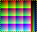
Шаги
- Загрузите стандартную таблицу поиска выше.
- Создайте новый документ Photoshop (.PSD) с помощью Цветовой режим установлен на RGB Цвет и 8 бит, достаточно большое по разрешению, чтобы вместить снимки экрана, которые вы планируете делать (HD, 4K и т. д.). Убедитесь, что вы назначили Цветовой профиль sRGB в ваш файл, чтобы обеспечить единообразие цвета на протяжении всего рабочего процесса.
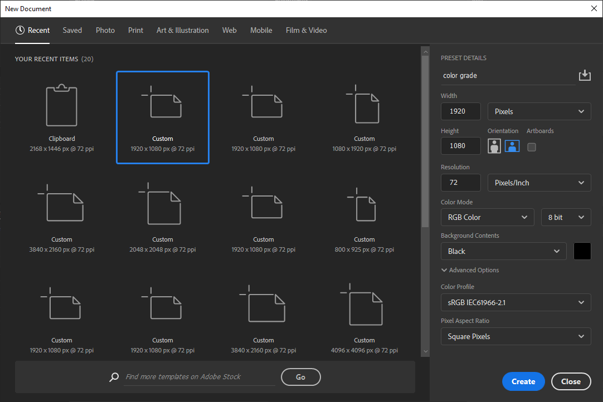
Photoshop – Новый документ
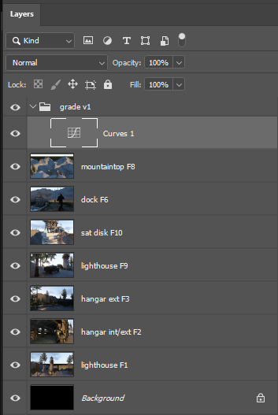 |
|
Экспорт новой таблицы поиска
Все, что нужно CRYENGINE, — это цветовая диаграмма, цвета которой были изменены в результате ваших настроек. Вы можете либо обрезать изображение так, чтобы оно включало только таблицу поиска, а затем экспортировать его (это рекомендуемый метод, так как это будет файл меньшего размера и быстрее загружающийся), либо экспортировать его как есть; CRYENGINE автоматически определит таблицу поиска и проигнорирует любое изображение за ее пределами.
- Убедитесь, что ваш проект CRYENGINE открыт и необходимые .cryasset файл для вашей таблицы поиска будет создан автоматически.
- В Photoshop выровняйте слои. (Слои → Свести изображение).
- Сохраните изображение в формате CryTif (Файл → Сохранить каки установите CryTif в качестве формата файла). Добавить _cch.tif к имени файла, поэтому Компилятор ресурсов автоматически выберет правильный шейдер. Установите следующий путь в папке вашего проекта: Активы\текстуры\цветовые диаграммы. Обратите внимание, что вы, возможно, выбрали собственное имя для папки с ресурсами. Кроме того, если эти папки еще не существуют, возможно, вам придется их создать.
- В диалоговом окне «Компилятор ресурсов» убедитесь, что ваше изображение нет выложенный плиткой и это Предустановка установлено на ColorChart. Нажмите на Создать вывод (не кнопку OK), чтобы экспортировать файл.
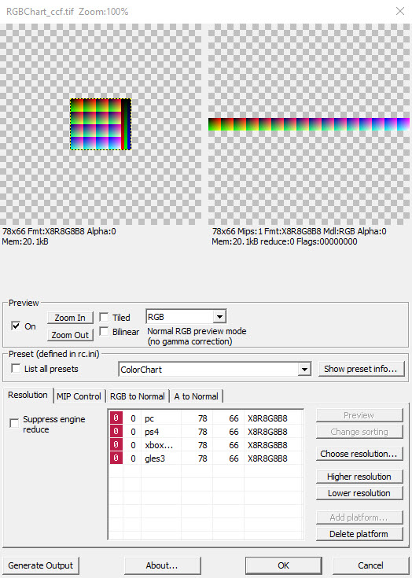
Компилятор ресурсов
- Откройте свой проект Активы\текстуры\цветовые диаграммы папка и vубедитесь, что файл, экспортированный с .dds имя расширения и что соответствующий .cryasset файл был создан. Таблица поиска готова к использованию.
Загрузка таблицы поиска в CRYENGINE
Теперь вы готовы применить новую таблицу поиска к своей игре:
Во-первых, убедитесь, что цветокоррекция включено (по умолчанию), набрав r_ColorGrading 2 (или 1) в консоли.
Существует несколько способов активировать пользовательскую цветовую гамму:
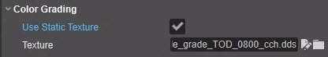 | Добавьте его в предустановку среды в Environment Editor, под Константы → Цветокоррекция путем включения Используйте статическую текстуру и перейдите к расположению вашей таблицы поиска в Текстура собственность. Обязательно сохраните измененную предустановку среды. Цветовая гамма будет применяться при каждой загрузке предустановки среды. После того как цветовая оценка была присвоена в Цветокоррекция → Текстура свойство, вы можете сравнить, как все выглядит с ним и без него, просто переключая Цветокоррекция → Использовать статическую текстуру свойство вкл/выкл. |
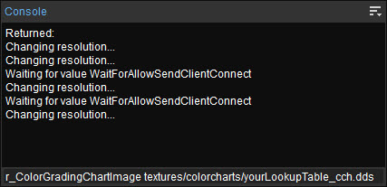 | Тип r_ColorGradingChartImage за которым следует относительный путь и имя вашего файла цветокоррекции в консоли (например, текстуры/цветовые диаграммы/yourLookupTable_cch.dds). Если вы планируете использовать этот метод вместо назначения его предустановке среды и хотите, чтобы он загружался при загрузке игры, обязательно добавьте его в один из ваших .cfg файлы или .cryproject файл. Просто имейте в виду, что при использовании этого метода нет гарантии, что в данный момент загружена правильная предустановка среды, на которой основана ваша цветовая оценка. |
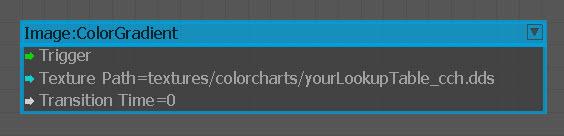 | Используйте Flow Graph Изображение: ColorGradient узел. Если вы планируете переключаться между несколькими цветовыми градациями в игре, рекомендуется также назначить цветовую гамму по умолчанию с помощью Изображение: ColorGradientDefaults node, чтобы Flow Graph знал, к какой цветовой гамме следует вернуться после временных переключений. Время перехода Свойство можно использовать для перехода от одного сорта к другому в течение выбранного интервала времени. |
| Используйте код или визуальные сценарии. |
Важные факты
Цветокоррекция — это последний этап процесса рендеринга.
Поскольку вы можете изменять цвета и тона в таблице поиска любым способом, используя сложные инструменты Photoshop, таблицы поиска могут выполнять более точную настройку цвета и тона для всего изображения, чем это можно сделать с помощью Переменные → HDR → Цветовой баланс и Насыщенность свойства, даже если их возможности перекрываются.
Например, вы могли бы;
- просто обесцветьте глубокие тени, чтобы получить лучший черный цвет;
- разделить тон изображения с холодными тенями и теплыми бликами;
- или создайте цветовую градацию, чтобы обесцветить все цвета и заменить все тени и светлые тона, превышающие выбранный вами порог, на красочное наложение; это помогает выявить обрезку или крайние тона, которые вы, возможно, захотите отрегулировать, прежде чем приступить к фактическому процессу цветокоррекции.
Вы можете увидеть примеры этих отладочных цветовых оценок в бесплатном GameSDK's текстуры.пак файл в папке цветовых диаграмм. Вам не нужно создавать проект GameSDK; просто открой .pak файл в утилите сжатия, такой как 7Zip, и извлеките интересующие вас цветовые оттенки в свой собственный проект. текстуры\цветовые диаграммы папку, а затем назначьте их одним из описанных выше способов.
Лучшие практики
- В общем, мы рекомендуем освещение и настройку окружающей среды как несколько плоскую, малоконтрастный посмотрите, а затем разработайте цветовую гамму, которая добавляет контраст, чтобы придать изображению окончательный желаемый вид. Добавление контраста работает лучше, чем попытки его уменьшить на этапе цветокоррекции. яЕсли ваше освещение в конечном итоге дает очень контрастное изображение, вы рискуете потерять детали в светах и тенях, которые будет трудно или невозможно восстановить. Попытка сделать это с помощью цветокоррекции часто приводит к появлению нежелательных артефактов полосатости (постеризации).
- Не забывайте, что цветокоррекция также будет применена к UI и меню вашей игры, поэтому обязательно включите снимки экрана соответствующих экранов в файл Photoshop, чтобы свериться с окончательной оценкой, или создайте отдельную цветокоррекцию и загружайте ее при появлении меню.
- Не забудьте отключить любая существующая цветовая гамма раньше создание снимков экрана для использования в новом процессе цветокоррекции.
- Обязательно сделайте из игры широкий спектр изображений, представляющих весь спектр условий освещения, поместите их в файл Photoshop и просмотрите влияние вашей цветовой гаммы на каждое из них в отдельности.
- Особенно обязательно добавьте снимки экрана сцен с максимальной контрастностью, где HDR пытается сбалансировать уровни внутреннего и внешнего освещения, чтобы убедиться, что вы не обрезаете тени или светлые участки из-за цветовой шкалы.
Photoshop Лучшие практики
Поскольку цветокоррекция часто проходит итерационный процесс long с участием арт-директоров и многих заинтересованных сторон, ваши слои Photoshop обычно растут и растут, отключаются, регулируется непрозрачность слоя и т. д. Таким образом, хорошая организация слоев Photoshop избавит вас от многих хлопот. Вот несколько советов, которые помогут вам сэкономить время и избежать путаницы:
- Используйте корректирующие слои (Слой → Новый корректирующий слой) в Photoshop (нет Изображение → Коррекция), поэтому вы влияете на внешний вид всех слоев снимка экрана (а также диаграммы цветов), а не вносите постоянные изменения в отдельный слой изображения.
- Будьте уверены нет использовать маски слоев в корректирующих слоях Photoshop, поскольку цветовая градация будет применяться глобально, а не локально.
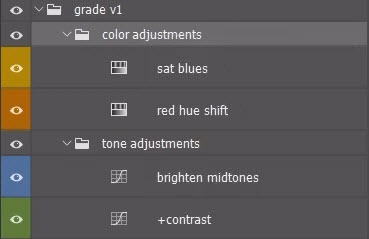 | Вы можете стандартизировать систему использования цветов слоев Photoshop, чтобы помечать корректировки цветами, значение которых согласовано с вашей студией: устаревшие, неиспользуемые, в разработке, альтернативные и т. д. |
Простой способ точно настроить силу корректировок, влияние которых вам нравится, но эффект слишком силен, — просто уменьшить непрозрачность слоя корректирующих слоев. Вы можете применить тот же подход к группе корректирующих слоев, поместив их в группа слоев и изменяя его непрозрачность, чтобы изменить интенсивность всей цветовой гаммы. Это особенно полезно, когда вы хотите изменить интенсивность сложных корректировок, например, кривых, имеющих много точек на каналах RGB, без необходимости изменять каждую точку, сохраняя при этом числовые соотношения.
Именование корректирующие слои, чтобы определить их предполагаемое назначение (обесцветить красные или увеличить контрасти т. д.) — это простой способ облегчить общение между командами и сэкономить время, затрачиваемое на попытки выяснить, что делает каждый уровень, особенно когда вы возвращаетесь, чтобы обновить его несколько месяцев или лет спустя. Если у вас появится привычка щелчок на кнопке регулировки в Корректировки палитра, удерживая Альтернативный вариант ключ: 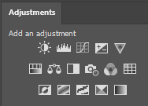
- вам будет предложено выбрать имя для слоя, а режим наложенияи непрозрачность слоя: 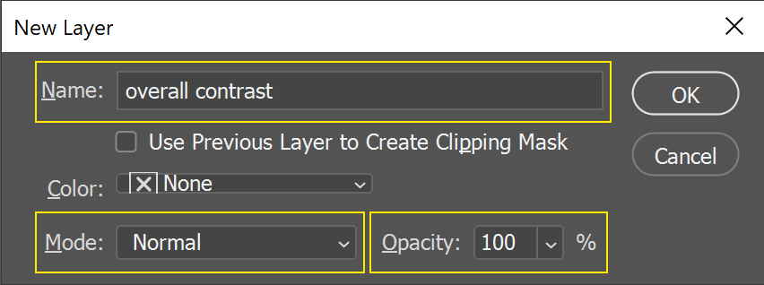
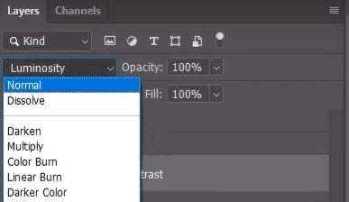 | Режимы наложения Photoshop обеспечивают независимый контроль над оттенком, насыщенностью и тональными изменениями. Например, добавление контраста в Нормальный Режим наложения также неизбежно увеличит насыщенность, поскольку цветовая модель RGB не имеет отдельных каналов для яркости, оттенка и насыщенности. Используя Яркость Режим наложения позволяет изменять тональный контраст, не затрагивая цвета. Аналогично, используя один из цветовых режимов — Цвет, Хюэ, или Насыщенность - позволяет изменять цвета, не затрагивая тона. |
Помните, что цветокоррекция – это последний шаг, выполняемый в конвейере рендеринга (в 8-битном цветовом пространстве sRGB), после Применяются настройки HDR (в 10-битном цветовом пространстве из 16-битных вычислений). Таким образом, снимки экрана, которые вы используете в процессе цветокоррекции, уже настроены с помощью любых настроек HDR, и HDR не влияет на цветокоррекцию после ее активации. Однако это также означает, что если вы вернетесь и внесете изменения в настройки HDR в предустановленной среде (или что-нибудь еще, что повлияет на окончательное изображение), вы по существу аннулируете свою цветовую гамму и вам придется начинать все заново. Таким образом, цветокоррекция должна быть последний шаг в конфигурации предустановки вашей среды. (Обратите внимание, что после рендеринга изображения и применения цветокоррекции возникают нефизические эффекты пост-рендеринга, например Переменные → Эффект солнечных лучей → Солнечные лучи Пользовательский цвет.)
Вы можете создавать и активировать цветовые оценки для специальных целей, например для мгновенного переключения на стилизованный вид, когда игрок ранен и ранен, для меню, специальных режимов просмотра или для целей устранения неполадок, например, применение ярких, насыщенных цветов к очень темным и очень ярким значениям RGB для визуального определения теней и светлых участков, которые темнее или светлее выбранного вами порога. Если вам нужно очень быстро переключаться между цветовыми градациями, возможно, вам придется отрегулировать CVar. r_ColorGradingChartsCache, который определяет, сколько кадров проходит между обновлениями цветопередачи. По умолчанию — каждые четыре кадра, но вы можете принудительно использовать каждый второй кадр со значением 1, или даже к каждому кадру с 0. Принуждение движка обновлять этот кэш чаще, чем меняется ваша цветопередача, только снизит производительность без какого-либо выигрыша.
Устранение неполадок
Если вы столкнулись с визуальными сбоями на PC, убедитесь, что вы не перезаписали настройки 3D ни для редактора, ни для запуска игры на панели управления видеодрайвера. Это основной источник визуальных артефактов.
В частности, обеспечение соблюдения множественная выборка или анизотропная фильтрация текстур может нарушить эффекты постобработки, отложенное затенение и другие аспекты конечного изображения.
Видеоурок
Это руководство также доступно в виде видео на нашем канале YouTube здесь: